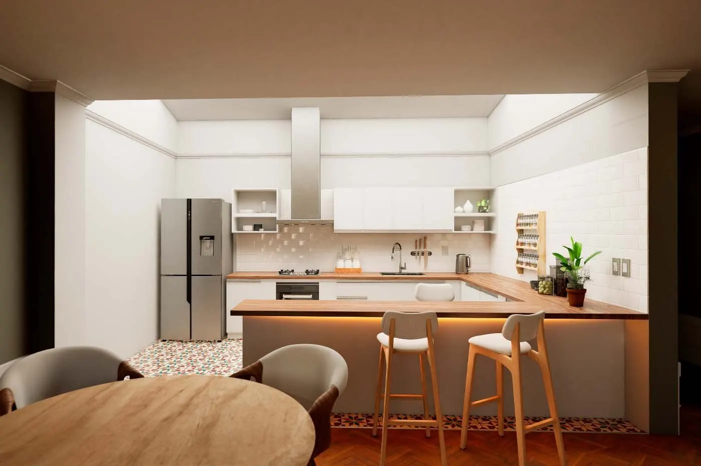
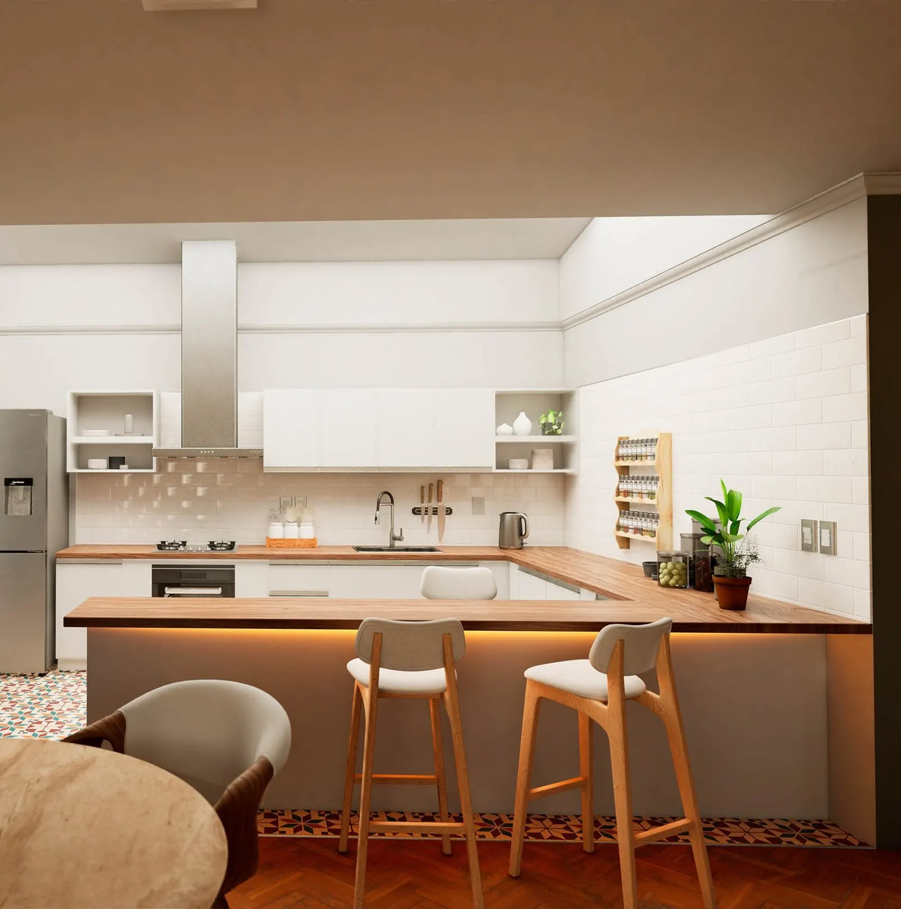
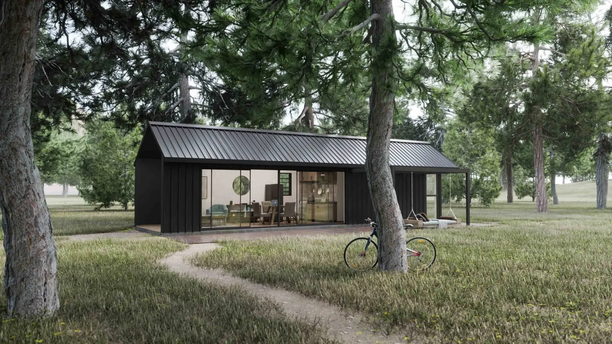

Estudio de visualización 3D y drones en Barranquilla
Visualización 3D y drones para construir y vender mejor
Renders, tours 360° y realidad virtual para constructoras e inmobiliarias, y drones para obras, industria y fincas. Proyectos en Colombia, Argentina, España y Estados Unidos.
Nuestros servicios en 4 líneas
Lo que hacemos, explicado por separado. Cada línea tiene su detalle, sus precios y cómo cotizar en la página de servicios.
- Visualización 3D
Renders, tours 360° y realidad virtual para vender en planos.
- Drones industriales
Termografía de paneles, redes y cubiertas, y mapas desde el aire.
- Campo y SIG
Topografía, agricultura y ganadería de precisión, con cotizador.
- Obras e inmobiliarias
Un vuelo al mes con SkyDeck y el marketing de Estudio FBX.

Proyectos con recorrido interactivo
Cada proyecto se abre en el navegador, sin instalar nada. Estos tres están publicados.
-
Plaza Urbina, Ambato
La remodelación del mercado, recorrida antes de la obra. Abrir el tour
-

Casa San Martín
Un departamento compacto con patio, ambiente por ambiente. Abrir el tour
-

Box House
Una casa modular en la que cambias los materiales en tiempo real. Abrir el tour
Obra publicada en cuatro países
Recorridos abiertos al público, un fuerte histórico reconstruido en realidad virtual y prensa que lo contó.
5+ años
En visualización 3D y realidad virtual
4países
Colombia, Argentina, España y Estados Unidos
8tours
Recorridos publicados y abiertos al público
6especialistas
Arquitectos, modeladores y producción
Preguntas frecuentes
Lo que más nos preguntan antes de cotizar. Si tu duda no está aquí, el asistente responde a cualquier hora.
Asistente de UltramediaHola, pregúntame por precios, plazos o cualquier servicio. Si hace falta, te paso con el equipo por WhatsApp.
¿Qué necesito para pedir un render o un tour?
Los planos del proyecto y su información técnica. Con eso hacemos el modelo 3D y, a partir de él, los renders, el tour o la realidad virtual.
¿Los tours funcionan en el celular?
Sí. Abren en el navegador del celular, del computador o de un visor de realidad virtual, sin instalar nada.
¿Trabajan fuera de Barranquilla?
Sí. Tenemos proyectos en Colombia, Argentina, España y Estados Unidos.
¿Cuánto cuesta el seguimiento de obra con drones?
En SkyDeck, alrededor de $1.000.000 al mes por obra con un vuelo, o $1.800.000 con dos vuelos y modelos 3D. También hay vuelos sueltos.
¿Cuánto dura el trabajo con una inmobiliaria?
El contrato mínimo es de 6 meses: una semana de diagnóstico, una de plan, de 8 a 12 de ejecución y luego mantenimiento.
¿Qué detecta la termografía con drones?
Fallas térmicas en paneles solares, redes eléctricas, plantas y cubiertas, antes de que causen pérdidas o paren la operación. Se cotiza según el sitio.